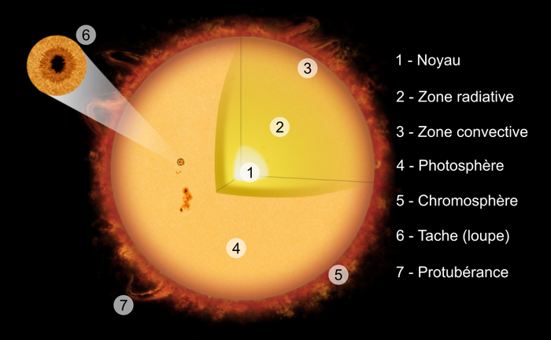

Le Soleil est l’étoile qui se trouve au centre de notre système solaire. Il fournit lumière et chaleur, rendant la vie possible sur Terre. Il est composé principalement d’hydrogène et d’hélium, et son énergie provient de réactions de fusion nucléaire qui se produisent en son cœur.
Illustration du Soleil
Taille et masse
Le Soleil est environ 109 fois plus grand que la Terre en diamètre et contient 99,86 % de la masse totale de notre système solaire. Il est tellement massif qu'il exerce une force gravitationnelle suffisante pour maintenir en orbite toutes les planètes, astéroïdes et comètes autour de lui.
Durée de vie et évolution future
Actuellement, le Soleil est dans une phase stable de sa vie appelée séquence principale, où il a brûlé environ la moitié de son hydrogène. Dans environ 5 milliards d'années, le Soleil se transformera en une géante rouge avant de finir par expulser ses couches extérieures pour devenir une naine blanche.
Rôle dans la formation du système solaire
Le Soleil s'est formé il y a environ 4,6 milliards d'années à partir d'une nébuleuse de gaz et de poussière. Son rôle central a guidé la formation des planètes et des autres corps célestes, les forçant à s'organiser en orbites autour de lui.
La structure du Soleil
Le Soleil est constitué de plusieurs couches

Structure schématique du Soleil
Le noyau : C’est ici que se produit la fusion nucléaire, générant une immense énergie.
La zone radiative : L’énergie met des milliers d’années à traverser cette zone.
La zone convective : Les gaz chauds remontent et refroidissent en surface.
La photosphère : La surface visible du Soleil.
La chromosphère : Une fine couche où se produisent de puissantes éruptions solaires.
La couronne : L’atmosphère externe du Soleil, visible lors des éclipses.